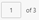
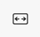
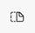
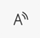
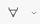
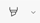
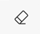

History and Preview Area
1 | History | Displays the history entry that is generated at the execution of each report, indicating the name of the report, the type of format (pdf, xlsx), and the timestamp of when the report is generated. The following actions are possible while generating reports:
|
2 | Download | Download the report that displays in the preview area. |
3 | Displays the preview of the report and options to edit the report for the PDF format, and for the Excel format, the Download option is displayed to download the report locally. | |
4 | Displays the additional report incorporated controls such as:  : Indicates the number of pages in the report and displays the current page number that is in the preview. Enter the page number in the left side box to preview it and the shortcut key for this navigation is Ctrl + Alt + G.- Search : Allows you to search words or texts in the report. Clicking search options, displays the small search bar with options to navigate through search results and close the search bar. The shortcut key for this is Ctrl + F. - Zoom out () Zoom in (): Helps to zoom-in and zoom-out the report view. The shortcut keys for the zoom out and zoom in functions are Ctrl + Minus(-) Ctrl + Plus (+). - Rotate : Allows you to rotate the report in the clockwise direction and the shortcut key this is Ctrl + J. -  : Helps to preview the report either in Fit to width or in Fit to page view. The shortcut key for this function isCtrl + \.- Page view  : Helps to display the report either in a Single page or in a Two page mode. The two page mode contains an option to Show cover page separately, enabling this option displays the cover page separately if it is available.- Read aloud  : This option reads out loud the readable content in the report.- Draw  : Allows you to draw on the report. Expanding the drop-down, displays options to select the color for pencil and to change the thickness of the pencil.- Highlight  : Helps to highlight the information in the reports. Expanding the drop-down, displays options to select the marker color.- Erase  : Helps to remove the changes or modifications done on the report.- Print : Helps to print the PDF using the print settings. The shortcut key for this is Ctrl + P. - Save : Allows you to save the report to the local machine and the shortcut key this is Ctrl + S. - Pin toolbar : Allows to pin or unpin the toolbar in the PDF preview area. | |